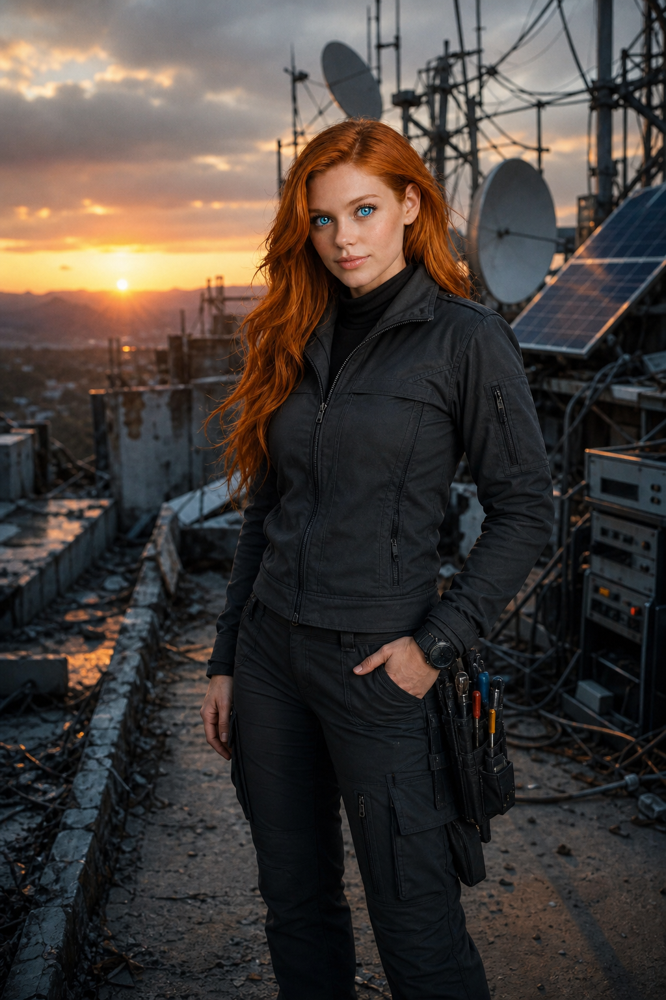

SINAIS
QUE FICARAM.
Registros feitos depois da queda. Jully transforma antenas, peças esquecidas e rotas quebradas em uma chance de alguém responder do outro lado.
05 REGISTROS // LEITURA ATIVA
SEQUÊNCIA JC-PRE // TRANSMISSÃO CONTÍNUA
JULLY EM FREQUÊNCIA
As imagens passam sozinhas, mas você pode trocar de registro a qualquer momento. Nenhuma fotografia é cortada.

JC-PRE-01
Estação de escuta
Jully mantém uma estação improvisada aberta para qualquer resposta.